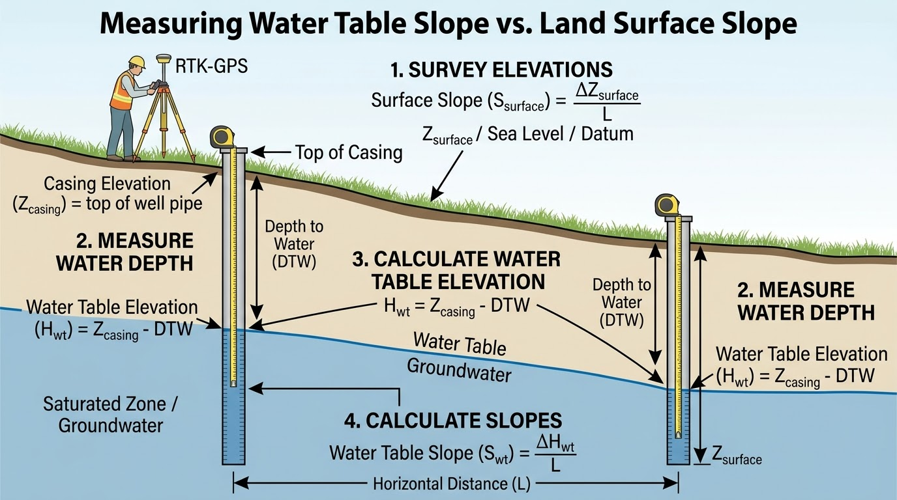

How closely does the water table follow the terrain?
EcoSIM’s relative slope r is the ratio of water-table elevation gradient to ground elevation gradient. The diagram anchors both surfaces at the left-hand reference location, then shows how their separation changes uphill.
Depth below ground at x = 0 m.
Ground hWater table HwReference elevation href = 0 m
Vertical scale adjusts automatically; the drawing is vertically exaggerated. Blue shading indicates the region below the prescribed water table.
Water-table riseAcross the 100 m transect
Change in depth below groundRight depth minus reference depth
Water-table depth at rightPositive below ground; negative above
Elevation and depth use different factors
h(x) = href + Sx
Hw(x) = href − D + rSx
dw(x) = D + (1 − r)Sx
Hw(x) = href − D + rSx
dw(x) = D + (1 − r)Sx
Here S = tan(θ), the signed horizontal ground gradient along this uphill transect. Because dw = h − Hw, r controls water-table elevation change, while 1 − r controls depth change.
Read the same geometry as numbers
| x (m) | Ground (m) | Water table (m) | Depth (m) |
|---|
At r = 0, the water table is horizontal. At r = 1, it is parallel to the terrain. Values above 1 illustrate a water table rising faster than the terrain.
Relating the slope ratio to field measurements
